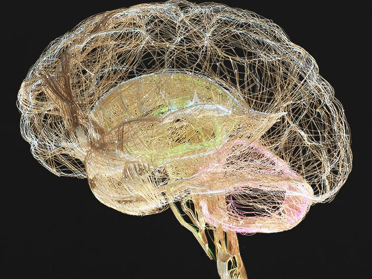

Musculoskeletal System (Muscles and Bones):
Playing soccer engages various muscle groups throughout the body, including the legs, core, and upper body. Dynamic movements such as kicking and jumping strengthen muscles, improve coordination, and promote bone density, reducing the risk of musculoskeletal injuries.
Cardiovascular System (Heart and Blood Vessels):
Playing soccer involves continuous movement, such as running and sprinting, which increases heart rate and blood flow. This improves cardiovascular health by strengthening the heart muscle and promoting better circulation throughout the body.

Respiratory System (Lungs and Airways):
Soccer requires aerobic activity, which enhances lung function and capacity. Increased breathing rate and oxygen intake support endurance and stamina during gameplay, improving overall respiratory health and oxygenation of tissues.

Nervous System (Brain and Nerves):
Soccer requires quick decision-making, spatial awareness, and coordination, which engage the brain and nervous system. Playing soccer stimulates neural pathways, improves cognitive function, and enhances motor skills, contributing to better mental acuity and cognitive health.
